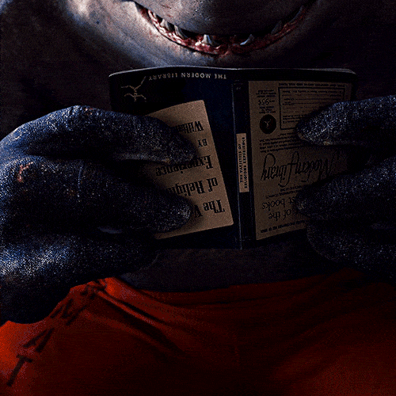
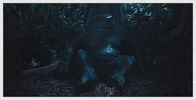

"Nham-Nham?" É a frase que você mais vai ouvir de Nanaue, independente da situação, sendo em uma conversa em um momento de descanço ou em uma batalha contra um alienígina capaz de causa o apocalipse na Terra. Provinda da insaciável fome por carne humana, Nanaue acabou criando um gosto em fazer suas refeições, tornando um hobby.

Olha ele coçando os dentinhos com o crânio do soldado que ele matou e comeu inteiro, que bonitinho!!!😭😭😭😭 Nem parece que está embaixo de um prédio enorme que está desabando.
"Muito esperto eu! Gostar livro bastante!"
Uma das maneiras que Nanaue sempre tentou aderir para conhecer o mundo, foi o da leitura, por mais que ele não sabia ler corretamente (ele é sempre pego com o livro de cabeça para baixo) devido ao seu vocabulário limitado, ele se esforça para gostar e aprender a ler seus livros.
"Hand?"

"Sim, essa é a sua mão Nanaue. Muito bem!"
Outra maneira que ele procura buscar conhecimento é demonstrando curiosidade para tudo, desde as coisas mais simples até as mais complexas, sempre questionando a certeza até aprender definitivamente.
Bônus: Cena excluida sobre Nanaue observando um relacionamento.
Após o lançamento do filme e do sucesso estrondoso do Tubarão-Rei, dublado no original por Sylvester Stallone, James Gunn revelou que uma das cenas protagonizadas pelo personagem acabou sendo excluída da versão final. Em entrevista ao Collider, o cineasta contou que o primeiro corte do longa tinha 2 horas e 40 minutos de duração, e precisou ser editado. Segundo ele, sequências incríveis acabaram ficando de fora, como uma passagem sensível de Nanaue. Gunn descreveu a cena deletada - e emocionante - do Tubarão-Rei: “Você assiste a esse momento, no qual o Tubarão-Rei está olhando pela janela. Ele vê um jovem casal se beijando. E você percebe, naquela hora, como ele não faz parte deste mundo e como ele deseja fazer parte deste mundo. Na verdade, foi uma espécie de montagem muito mais longa. Isso é realmente lindo, e eu aprecio muito, por si só”.
Voltar para a página inicial🐬🐬🐬🐬🐬🐬🐬🐬🐬🐬🐬🐬🐬🐬🐬🐬🐬🐬🐬🐬🐬🐬🐬🐬🐬🐬🐬🐬🐬🐬🐬🐬🐬🐬🐬🐬🐬🐬🐬🐬🐬🐬🐬🐬🐬🐬🐬🐬🐬🐬🐬🐬🐬🐬🐬🐬🐬🐬🐬🐬🐬🐬🐬🐬🐬🐬